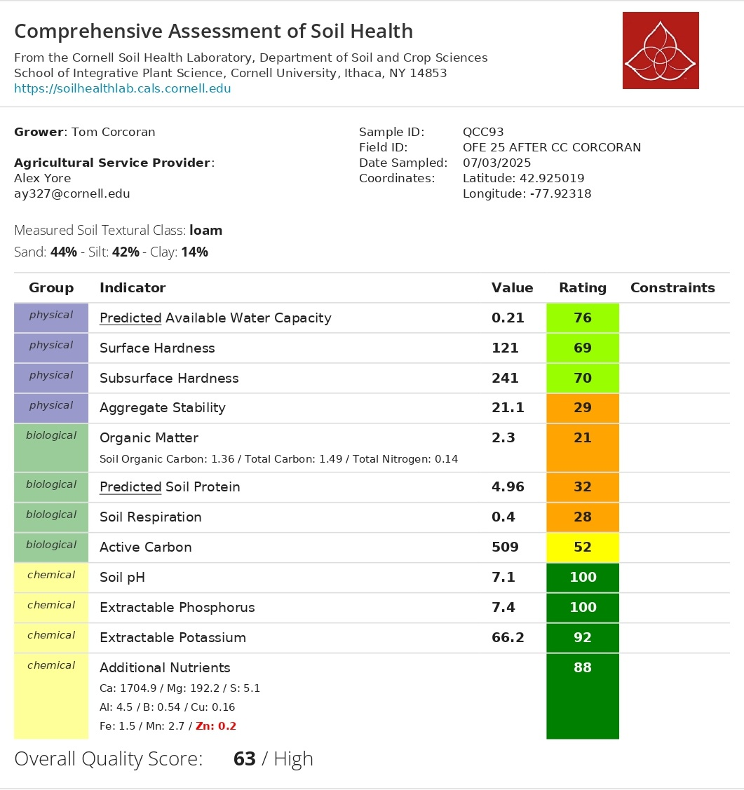

| Metric | n | T0 (60 lb N/ac) | T1 (60 lb N/ac) | T2 (50 lb N/ac) | T3 (40 lb N/ac) |
|---|---|---|---|---|---|
| 🌾 Corn Yield (bu/ac) | 1 per strip | 204 bu/ac | 185 bu/ac | 178 bu/ac | 180 bu/ac |
| 🧪 Biomass %N | 4 per strip | 3.486 ± 0.103% | 3.218 ± 0.056% | 3.371 ± 0.071% | 3.419 ± 0.32% |
| 🧪 C:N Ratio | 4 per strip | 13.14 ± 0.42 | 14.53 ± 0.24 | 13.78 ± 0.38 | 13.85 ± 1.11 |
YOUR OFE 2025 REPORT

Welcome to your 2025 farm report. This report summarizes the on-farm nitrogen rate experiment conducted in your field. Four nitrogen application rates (T0 = 60, T1 = 60, T2 = 50, T3 = 40 lb N/ac) were compared following a cover crop planted behind soybeans or dry beans. The goal was to determine whether a cover crop allows a reduction in nitrogen inputs without sacrificing crop nitrogen status.

Take-home message: Corn biomass was analyzed for nitrogen concentration (%N) and C:N ratio across four N-rate strips. If the cover crop provides meaningful N credit, we would expect T2 (50 lb N/ac) and T3 (40 lb N/ac) to achieve nitrogen status comparable to the control (T0, 60 lb N/ac). Results are presented below.
Results Summary
n = 4 samples per treatment. T0 = Control (farmer rate, 60 lb N/ac). Results are descriptive; effect sizes are reported given small sample sizes.
🌾 Corn Yield
Corn yield was measured by strip across the four N-rate treatments (T0–T3). Each strip corresponds to one measurement. Because there is one observation per treatment, no statistical test is possible — results are presented as a field-level comparison.
T0 — 60 lb N/ac
204bu/ac
T1 — 60 lb N/ac
185bu/ac
T2 — 50 lb N/ac
178bu/ac
T3 — 40 lb N/ac
180bu/ac
n = 1 per strip — field-level observation only.
🧪 C:N in Corn Biomass
Corn biomass was collected and sent for laboratory C:N analysis. This measures the actual nitrogen concentration in plant tissue, a direct indicator of how much N the plant was able to take up at the time of sampling. Note: sample sizes are small (n = 4 per treatment), so results are descriptive. Effect sizes (Cohen’s d vs Control) are reported instead of p-values.
Total Nitrogen in Biomass (%N)
T3 — 40 lb N/ac
3.419% N
T2 — 50 lb N/ac
3.371% N
T0 — 60 lb N/ac
3.486% N
T1 — 60 lb N/ac
3.218% N
n = 4 per treatment — results are descriptive only.
C:N Ratio
A lower C:N ratio indicates more nitrogen-rich plant tissue. If reduced N rates still produce tissue with a C:N comparable to the Control, that supports the idea that the cover crop is compensating for the lower applied N.
T3 — 40 lb N/ac
13.85C:N ratio
T2 — 50 lb N/ac
13.78C:N ratio
T0 — 60 lb N/ac
13.14C:N ratio
T1 — 60 lb N/ac
14.53C:N ratio
Lower C:N = more nitrogen-rich tissue. n = 4 per treatment.
🌱 Soil Health Assessment
Soil health was assessed using the Cornell Soil Health Test. The overall quality score was 63/100 (High). Physical indicators were strong (Available Water Capacity: 76, Surface Hardness: 69, Subsurface Hardness: 70). The main areas for improvement were biological indicators: Organic Matter (score 21-Low), Soil Respiration (score 28-Low), Predicted Soil Protein (score 32-Low), and Aggregate Stability (score 29-Low). Chemical indicators were excellent, with Soil pH (100), Extractable Phosphorus (100), and Extractable Potassium (92) all in the Very High range. Zinc was flagged as deficient.

📝 Conclusion
🌾 Corn Yield by N-Rate Strip
T0 Control (60 lb N/ac) yielded 204 bu/ac.
T1 (60 lb N/ac): 185 bu/ac (-19 vs Control).
T2 (50 lb N/ac): 178 bu/ac (-26).
T3 (40 lb N/ac): 180 bu/ac (-24).
Note: n = 1 per strip — these are field-level observations, not replicated results.
🧪 Biomass %N — T2 vs Control (50 vs 60 lb N/ac)
T2 (50 lb N/ac) showed a mean biomass %N of 3.371%
compared to Control at 3.486%
(difference: -0.115%). The C:N ratio for T2 was 13.78 vs Control at 13.14 (+0.64). With only 4 samples per treatment,
this is a descriptive finding — a promising signal to monitor in future seasons.
🧪 Biomass %N — T3 vs Control (40 vs 60 lb N/ac)
T3 (40 lb N/ac) showed a mean biomass %N of 3.419%
compared to Control at 3.486%
(difference: -0.067%). The C:N ratio for T3 was 13.85 vs Control at 13.14 (+0.71). Results should be interpreted with caution
given the small sample size (n = 4).
🌱 Soil Health Context
The Cornell Soil Health Assessment (Overall Score: 63/High) identified
low biological activity as the main constraint — Organic Matter (21), Soil Respiration (28),
and Aggregate Stability (29) are all in the Low range. These indicators suggest that
the cover crop system has room to build soil biology over time, which may increase
N mineralization and support N credit in future seasons.
📌 Next Steps
Continue the N-rate trial in future seasons with larger sample sizes to enable
formal statistical testing. Monitoring end-of-season biomass and yield alongside
in-season nitrogen status (Dualex) would strengthen the evidence base. The consistent
design across strips makes this field well-positioned for multi-year analysis.